FOSS Overview
Seth W. Bassett, GISP
April 3, 2019
Why FOSS?
Why I use FOSS GIS
- Expands my bag of tricks
- Opens up alternative routes to success
- Documentation is often better than proprietary tools
- Error tracing is more detailed and robust than proprietary tools
- The theory of “career portability”
Succeeding with FOSS GIS
- Self-starting
- Willingness to experiment and try new things
- Willingness to read the documentation
- Willingness to bang your head against a wall
The FOSS Community
A Brief History of FOSS
In the early days of computing souce code was typically proprietary, whether corporate or academic.
The FOSS model of software development as we know it today began when Richard Stallman launched the GNU Project and the Free Software Movement in 1983. He published the first GNU General Public License in 1989.
Linux Torvalds released the first Linux kernel in 1991.
The Open Source initative started in 1998.
The Open Source Geospatial Foundation was founded in 2006.
FOSS Today
The world of Free and Open Source software is large and growing.
In terms of market share, Linux currently has:
FOSS GIS
The GIS segment of the FOSS community has come a long way in the past 10 years.
- The FOSS GIS community is lead by OSGeo, a 501(c)(4) not-for-profit organization.
- The annual OSGeo conference is FOSS4G and is held every Fall. It is typically held in North America every third year.
- FOSS4G-NA is held every spring in North America.
- OSGeo also puts on a variety of workshops, hackathons, code sprints, and other activities.
Show of Hands
- Some experience with Linux
- Use Linux as your main OS
- Attended FOSS4G, FOSS4G-NA, or other OsGeo/FOSS event
- Mortally tired of “this is my storymap” or “this is my collector project” presentations
Why are we here?
- Me: So lonely.
- You: ???
- Us:

- You will become me.

A Brief Primer on Copyright
What is Copyright?
Computer programming falls under intellectual property law, which encompasses copyright, patents, and trademarks.
- Copyright is the legal right of a creator to control downstream distribution and use of his or her creative work.
- Since 1987, copyright is applied by default to all creative works, with the creator holding the copyright.
- Coding is considered a creative act: just like music, film, television, authorship, or other art.
- A basic understanding of copyright is key to understanding what “Free and Open Source” is all about.
Florida Sunshine Law: Data vs. Code
Under the Florida Sunshine law, data is a matter of fact and public data gathered by state agency is considerd public record and in the public domain. However, there is a specific exemption written into law for source code or ‘data processing software’ developed by state agencies.
Section 119.084(2), F.S. […] specifically authorizes agencies to hold a copyright for data processing software created by the agency. The agency may sell the copyrighted software to public or private entities or may establish a license fee for its use. [Florida Sunshine Law Manual, p165]
Basic FOSS Philosophy
Free and Open Source Software
‘Free as in freedom, not free as in beer.’
Open source software is widely used in conjuntion with or as a part of commercial software but is not necessarily ‘free’ even if it cost nothing to acquire.
Richard Stallman @ FOSS4G

Iconoclastic tech guru that doesn’t use the internet. See Stallman’s FOSS4G keynote here.
The Four Freedoms
- Freedom 0: The freedom to run the program as you wish, for any purpose.
- Freedom 1: The freedom to study how the program works, change it so it does your computing as you wish. A precondition to this freedom is access to the source code.
- Freedom 2: The freedom to redistribute copies so you can help others
- Freedom 3: The freedom to distribute copies of your modified version to others. A precondition of this freedom is access to the source code.
Stallman @ FOSS4G
Stallman @ FOSS4G
Who is in control of your device?
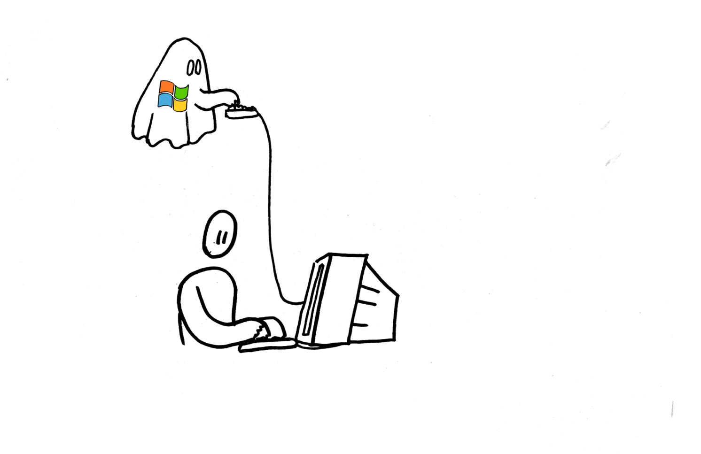
Stallman @ FOSS4G

Stallman @ FOSS4G
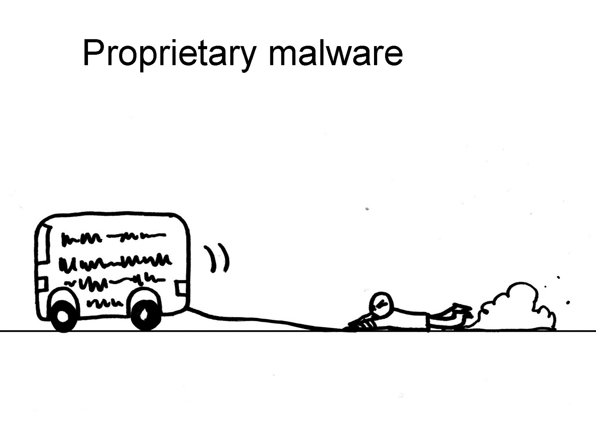
Automatic updates mean that a corporation can execute arbitary code on your personal device, a violation of Freedom 0.
Open Source Software
Open Source is a type of computer software in which source code is released under a license in which the copyright holder grants users the rights to study, change, and distribute the software to anyone and for any purpose.
Wikipedia:Open Source Software
Open Source Development
Open-source software development is the process by which open-source software, or similar software whose source code is publicly available, is developed by an open-source software project. These are software products available with its source code under an open-source license to study, change, and improve its design.
Wikipedia:Open Source Development
Open Source vs. Free Software
“The two terms describe almost the same category of software, but they stand for views based on fundamentally different values. Open source is a development methodology; free software is a social movement”
Richard Stallman
Why is this important?
The FOSS community is diverse and filled with actors motivated by different goals. Understanding the logic behind a licensing scheme is much easier than trying to understand the legalese of the licenses itself.
Licensing
Licensing Basics
Licensing is the method by which a creator controls subsequent downstream use of their creative work. Licensing can be thought of a spectrum.

Public Domain
- Public domain consists of all creative works to which no exclusive intellectual property rights apply. No limitations on downstream works can be enforced.
- Those rights may have expired, been forfeited or expressly waived, or may be inapplicable.
- Government data and publications are public domain by default unless specifically exempted.
- SQLite is widely used and in the public domain.
- Because copyright is assigned by default on all creative works, contributors must sign an affidavit expressely relinquishing their rights to their work on SQLite.
Closed Source: ESRI ArcMap EULA
ARTICLE 2
Products are licensed, not sold. Esri and its licensors own Products and all copies.
ARTICLE 4.2: Uses Not Permitted
- Reverse engineer, decompile, or disassemble Products;
- Incorporate any portion of the Product into a product or service that competes with the product.
- Use, incorporate, modify, distribute, provide access to, or combine any computer code provided with any Product in a manner that would subject such code or any part of the Product to open source license terms.
C:\Program Files (x86)\ArcGIS10.x\License\EULA.pdf
Closed Source: Enforceability
Not all provisions of a EULA are legally enforceable….
Closed Source: Enforceability
Closed Source: Incorporation of Open Source
- Q: Why should I use FOSS if I have an ESRI license?
- A: You already are using FOSS, you’re just paying a premium for a comforting UI.
ESRI Open Source Licensing Acknowledgements
Also at: C:\Program Files (x86)\ArcGIS10.x\License\Copyright
Permissive Open Source
Permissive open source licenses have minimal requirements regarding distribution and downstream use, typically limiting themselves to a requirement that the original software and license be reprinted and made available to the end user. This style of license allows for unlimited commercial or proprietary use and is routinely incorporated into closed source software.
- BSD License
- MIT License
- Apache License
- PostgreSQL License
MIT License
Permission is hereby granted, free of charge, to any person obtaining a copy of this software and associated documentation files (the “Software”), to deal in the Software without restriction, including without limitation the rights to use, copy, modify, merge, publish, distribute, sublicense, and/or sell copies of the Software, and to permit persons to whom the Software is furnished to do so, subject to the following conditions:
MIT License
The above copyright notice and this permission notice shall be included in all copies or substantial portions of the Software.
THE SOFTWARE IS PROVIDED “AS IS”, WITHOUT WARRANTY OF ANY KIND, EXPRESS OR IMPLIED, INCLUDING BUT NOT LIMITED TO THE WARRANTIES OF MERCHANTABILITY, FITNESS FOR A PARTICULAR PURPOSE AND NONINFRINGEMENT. IN NO EVENT SHALL THE AUTHORS OR COPYRIGHT HOLDERS BE LIABLE FOR ANY CLAIM, DAMAGES OR OTHER LIABILITY, WHETHER IN AN ACTION OF CONTRACT, TORT OR OTHERWISE, ARISING FROM, OUT OF OR IN CONNECTION WITH THE SOFTWARE OR THE USE OR OTHER DEALINGS IN THE SOFTWARE.
Copyleft
Copyleft licensing, aka restrictive open-source licensing, includes hard restrictions on downstream derivative works designed to enforce the four software freedoms and keep free software free.
- GNU General Public License (GPL): v1, v2, v3
- Affero General Public License (APGL): v1, v2, v3
- Open Software License
- Creative Commons Share Alike
Contrary to popular belief, copyleft does not prevent commercial use of copyleft software. Copyleft licensing is also pejoratively known as “viral licensing.”
Copyleft: the GPL
- Users are free to run, study, share, and modify the software
- Privately held derivative works do not require you to publish your source code.
- However, if you modify GPL software and distribute it to other users you must:
- Provide copies of your modified source code along with the compiled binaries
- License it under the GPL (hence ‘viral’)
- Provide copies of your modified source code along with the compiled binaries
The APGL closes the ‘SaaS loophole’ in the GPL for commercial SaaS software that runs on cloud servers.
Using FOSS in Business
- Closed Source
- You must pay for it and abide by the terms of the EULA
- You must pay for it and abide by the terms of the EULA
- Public Domain
- You are free to do anything with it with no restrictions
- Permissive Open Source
- You are free to do anything with it, provided you acknowledge the original software and reprint the license
Copyleft Licensing
How do you develop proprietary business software on top of GPL code, when GPL requires that you make the source code of all derivative works publically available?
- Sell copies of FOSS software (likely not viable)
- Give away copies of software; sell support, customization, and consulting expertise
- Incorporate GPL in proprietary software as a library and do not modify the source
- Modify the source but do not redistribute it, i.e. using GPL software as a SaaS (ethically dodgy)
FIKAL: FOSS I HAVE KNOWN AND LOVED
QGIS
The Good
- Full Featured FOSS GIS Suite
- Plugins extend functionality
- Direct connections to PostGIS support multi-user, transaction based editing
- Multi-core rendering
- LTS for business use
- Many raster blending options
- Makes you look like a genius
The Bad
- ESRI has intentionally crippled the OpenGDB API, so file geodatabases can be problematic
- Bugs, although not as many as ArcGIS in my experience.
- User Interface might appear clunky to some.
- Map Composer is alien to ArcGIS users.
QGIS: Shapefile Repair
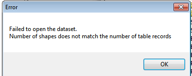
Problem: ArcMap cannot read shapefiles saved in an earlier version
Solution: Open in QGIS and ‘Save As…’ another shapefile.
QGIS: Raster Processing
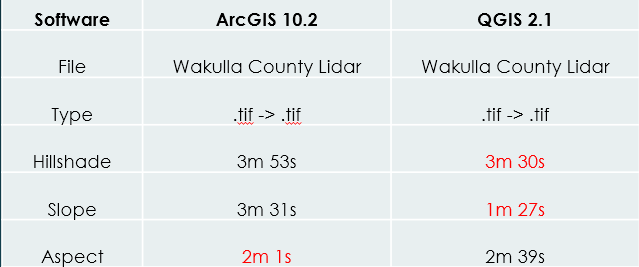
QGIS uses GDAL for many of its raster utilities.
QGIS: Raster Blending
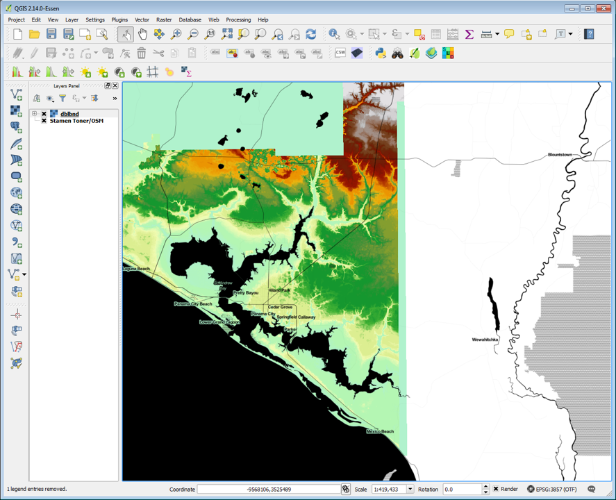
Here we see the Stamen Toner basemap blended with a DEM using the ‘Multiply’ option.
QGIS: 3D, web ready content
Example using the qgis2threejs plugin Another example using the qgis2threejs plugin
gdal
Blazing fast, vector and raster processing in native C, with python bindings.
The Good
- Wide array of raster and vector tools.
- Very fast
- Raster Utilities
- Vector Utilities
- Powerful tools, e.g. ogr2ogr allow you to translate entire databases in a go
The Bad
- Command line interface using flags
- Every utility is different so learning new ones is a challenge
- Very difficult to install on Windows
gdal: Examples
An 8-bit SPOT scene stored in GeoTIFF with control points mapping the corners to lat/long could be warped to a UTM projection with a command like this:
gdalwarp -t_srs '+proj=utm +zone=11 +datum=WGS84' -overwrite raw_spot.tif utm11.tif Create 10m contours from multiple a TIFF DEM and create a shapefile with the contour elevations in the “elev” attribute:
gdal_contour -a elev dem.tif contour.shp -i 10.0 Protip: Use QGIS as a ‘cheater’ to set up a single commmand, and then modify for batch operations.
PostGIS: It’s not Oracle!
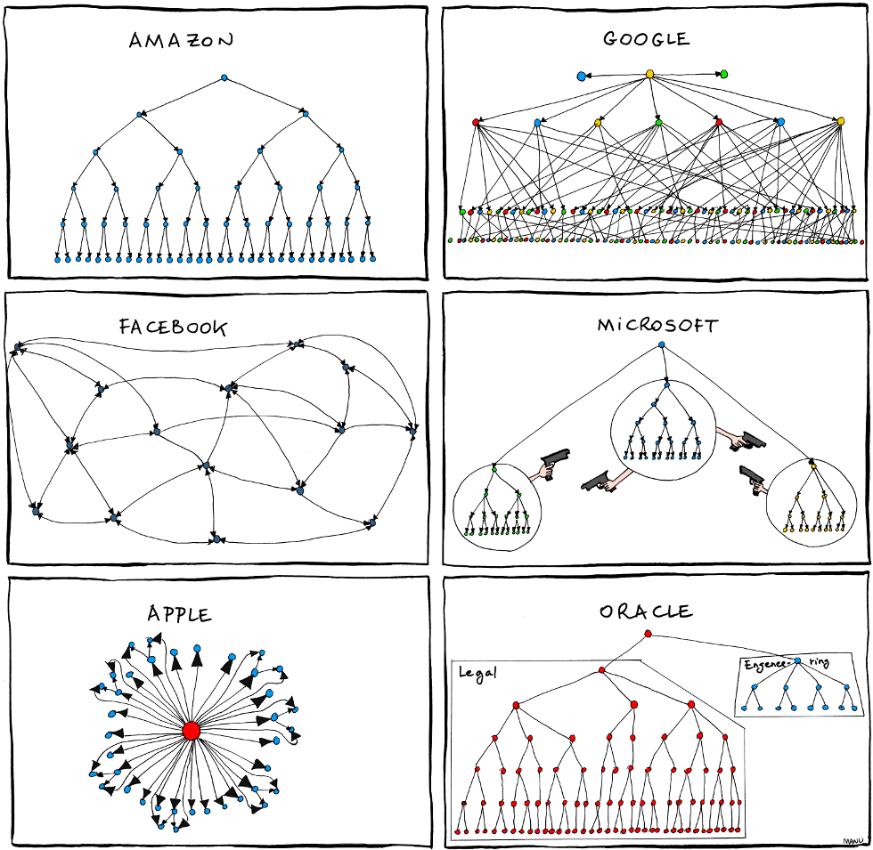
PostGIS: It’s not Oracle!
PostGIS
The Good
- Tons of Spatial Functions
- Cross Platform, including AWS & Azure RDS services
- Blazing fast on old hardware
- Direct integration with QGIS
- Command line toolset to import shapefile and raster data
- Structure (schemas, tables, etc) will be familiar to FileGDB users
- Excellent documentation
- Foreign Data Wrappers!
The Bad
- “Enterprise” level software solution (IT will choke)
- Require mid-level proficiency in SQL to get started
- Learning the ST function suite takes time
- Poor/buggy ESRI integration as of ArcMap 10.4
- Basic DBA skills required to manage users, roles, permissions, and config
PostGIS: Inspiration
Who owns Florida?
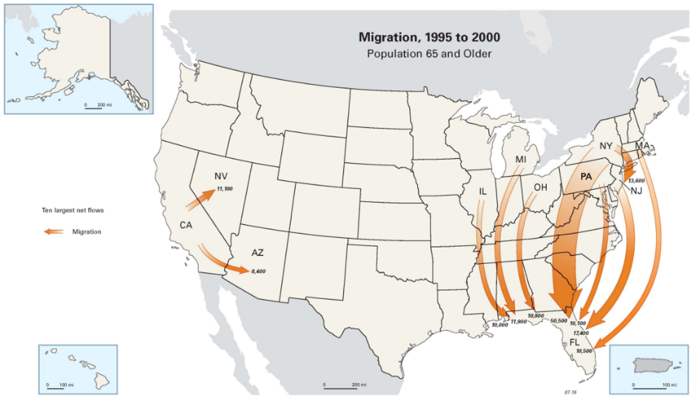
PostGIS: Who owns Florida?
- Calculate 9,008,470 parcel centroids
- Calculate all US zip code centroids
- Exclude owner’s ZIP where ZIP intersects Florida, and any property that is not residential
- Aggregate the Just Value (appraised value) of every owner zip code
- Use ST_Makeline() to connect every parcel to the owner’s ZIP centroid.
Volusia County Parcel Vectors
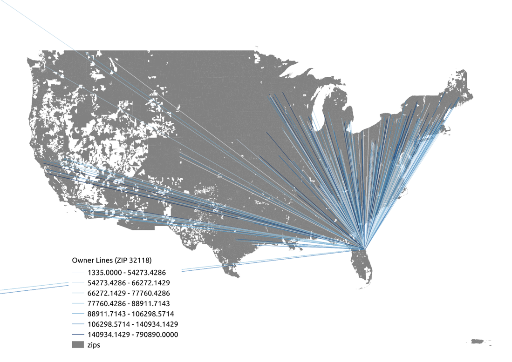 Scaled by Average Just Value per Owner ZIP
PostGIS: Who owns Florida?
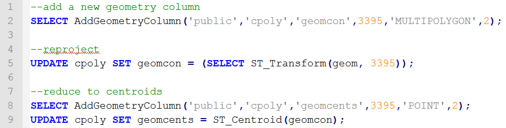
PostGIS: Who owns Florida?
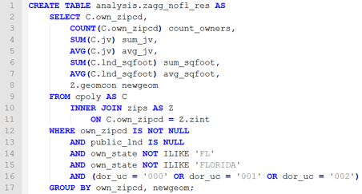
PostGIS: Who owns Florida?
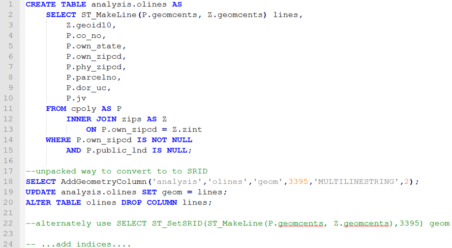
OpenJump
The Good
- Preferred by PostGIS Gurus
- Lightweight, platform agnostic Java application
- Query layers!
The Bad
- UI can feel outdated and clunky
Geoserver
FOSS WMS map services
The Good
- Directly integrates with PostGIS
- Serve out data direct to web apps and ArcGIS users via WFS, WMS, etc.
- Data is downloadable as KML, SHP, and others
The Bad
- Requires strong familiarity with Linux in a production environment
- SLD styling is a horror show (that QGIS can help you mitigate…)
- Backend software only
- Savvy web-development team really needed to leverage into web apps
scikit-image/scikit-learn
Image processing, segementation, feature detection, and machine learning
The Good
- Bleeding edge machine learning and image processing algorithms
- Some algorithms will be familiar to image analysts
- Easily integrates with ArcPy, especially in Pro
- Extremely powerful and fast
- Excellent documentation
The Bad
- Requires a strong knowledge of image processing and programming
- Experience with multi-threaded processing in python is really need to leverage results
OSGeo VM
Want to play? GO HERE..
The Good
- Quickstart you FOSS-GIS experience with a custom VM that has a wide array of FOSS-GIS software pre-installed.
The Bad
- Doesn’t teach you installation and configuration, which is often half the battle…
We’re adults. It’s up to us to decide what that means.
Topics for Second Hour
- Next meeting: May 1?
- Current format: ok?
- Weekend workshops
- Hackathons, code sprints, and group projects
- Weekend workshops
- Suggestion for next meeting:
- Seth-led presentation on using Virtual Machines to play with FOSS software safely.
- Call for 3-6 volunteers to lead a sessions.
- Skill level can be from ‘I decided to play around with…’ to ‘Advanced usage of…’
- Focus should be on ‘this is how you do something’ not a ‘this is what I did’ style report.
- Skill level can be from ‘I decided to play around with…’ to ‘Advanced usage of…’
Topics for Second Hour
- Future directions
- Continue as we are until SHRUG
- In the meantime, get together a SHRUG special interest session of 3-6 SHRUG presentations based on these.
- Use SHRUG session to expand group.
- Group Name?
- FFOSS
- FOSS-TLH
- T-FOSS
- The Cheap Bastards and Bastardets
- FFOSS